technic construction lessons
Generated from package READMEs. Inspiration, held, diagnostic and retired sources require explicit knowledge search scopes.
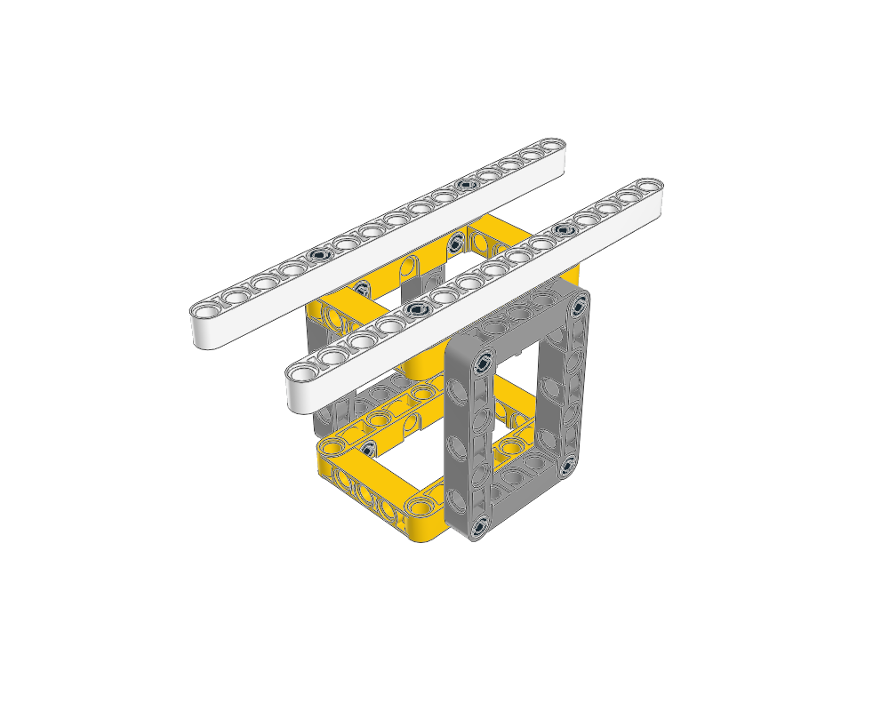
Compact box-frame/trestle lesson with paired long upper rails. Same role visible as the two workshop supports. Retain geometry/structural check scope and expose usable stud-ended mounts.
Static visual evidence only unless the linked package records specific further checks. Search eligibility does not certify fit, motion or strength.
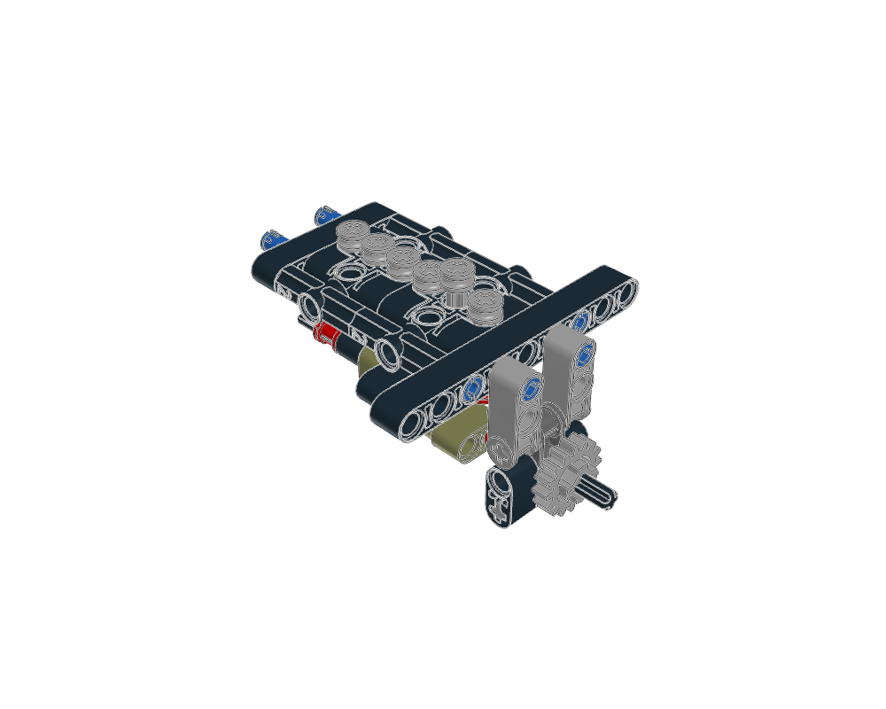
Root plus both child constructions together. Six axle followers sit above phased liftarm cams; one follower is raised. Label children guided-follower-block and camshaft-with-support-links, replacing generic piston-engine descriptions. Retained source geometry does not prove gravity return or full-cycle contact.
Static visual evidence only unless the linked package records specific further checks. Search eligibility does not certify fit, motion or strength.
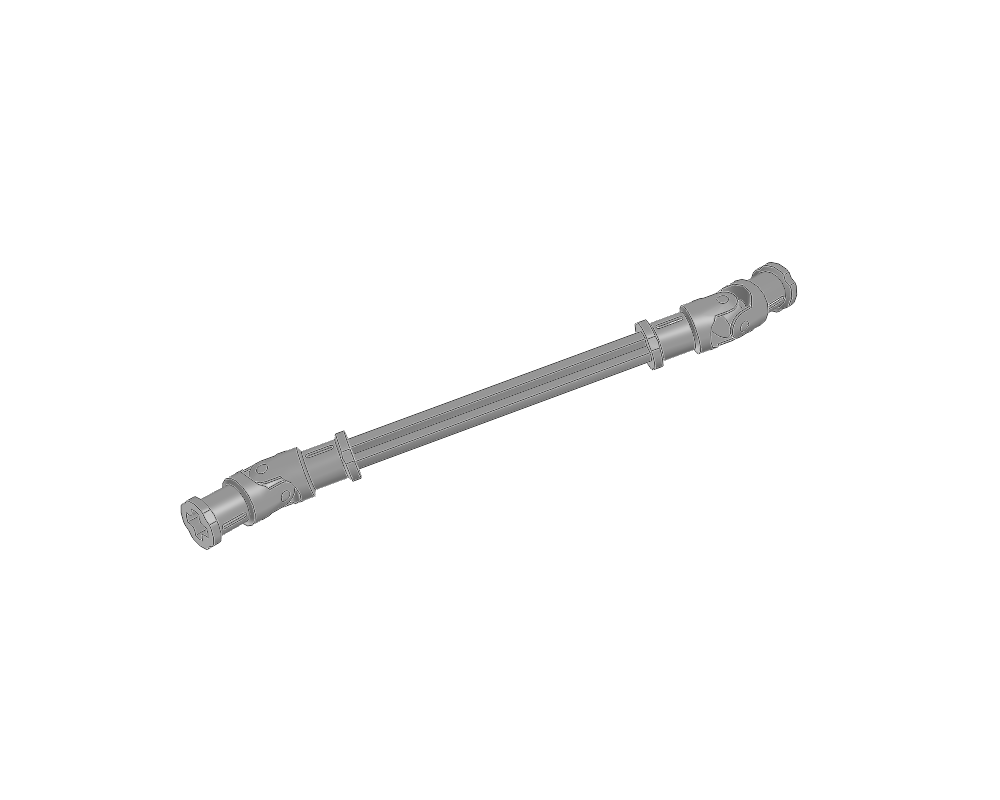
Unsupported paired-joint shaft study, not ready-to-mount drive module. Seven-piece extract shows two universal joints and intermediate axle but no bearings, adjoining axles or retention. Preserve phase and measured positioning frame; add supports during adaptation.
Static visual evidence only unless the linked package records specific further checks. Search eligibility does not certify fit, motion or strength.
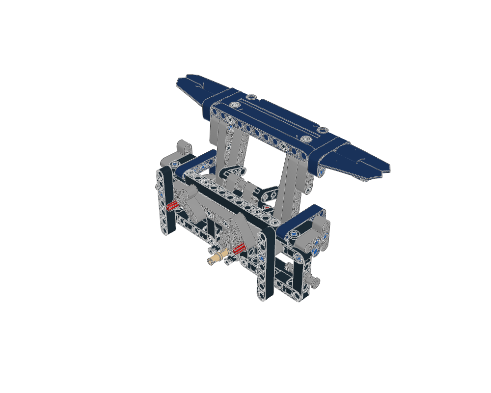
Partial wing-lift linkage study. Broad wing panel, paired uprights, links and partial surrounding frame are visible. Guide assumes fixed upper pivot and omits full actuator. Do not retrieve as a self-supporting service lift.
Static visual evidence only unless the linked package records specific further checks. Search eligibility does not certify fit, motion or strength.
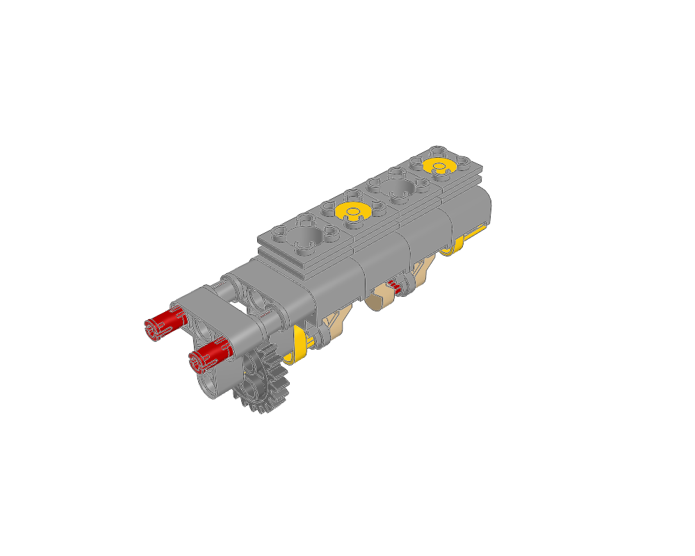
Four-cylinder core with alternating piston heights, shared crankshaft and end drive gear. No freestanding support frame. Parent central drive and other banks are required for the source engine role.
Static visual evidence only unless the linked package records specific further checks. Search eligibility does not certify fit, motion or strength.
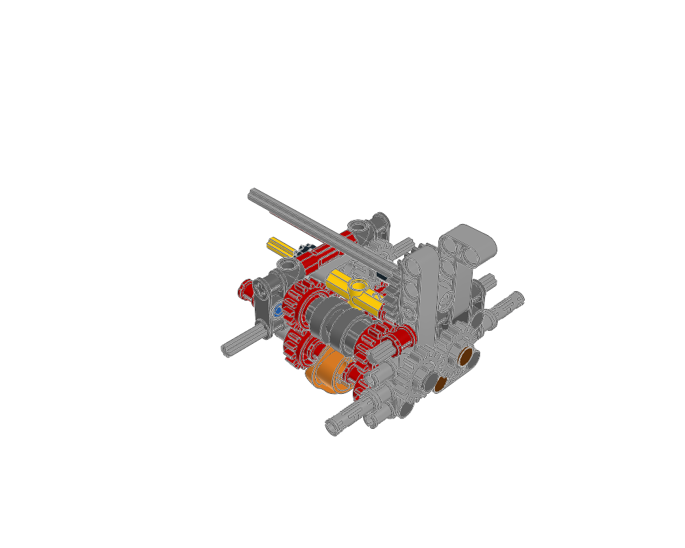
Four-speed transmission core plus auxiliary shaft/support child. Driving rings, selector elements and compact gear trains are visible; the child forms one side of its support/shaft arrangement. External selector controls and surrounding driveline are omitted. No ratio or full-cycle validation added.
Static visual evidence only unless the linked package records specific further checks. Search eligibility does not certify fit, motion or strength.
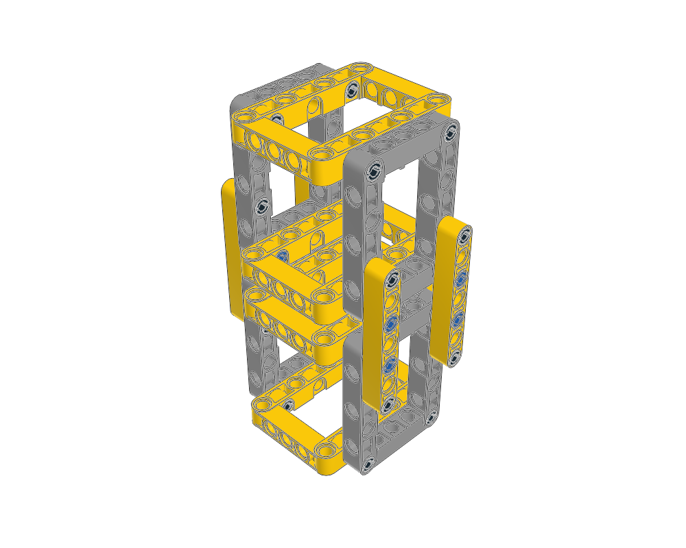
Stacked frame tower: rectangular rings, opposed vertical frames and side connectors clearly express repeated bracing. No load rating.
Static visual evidence only unless the linked package records specific further checks. Search eligibility does not certify fit, motion or strength.
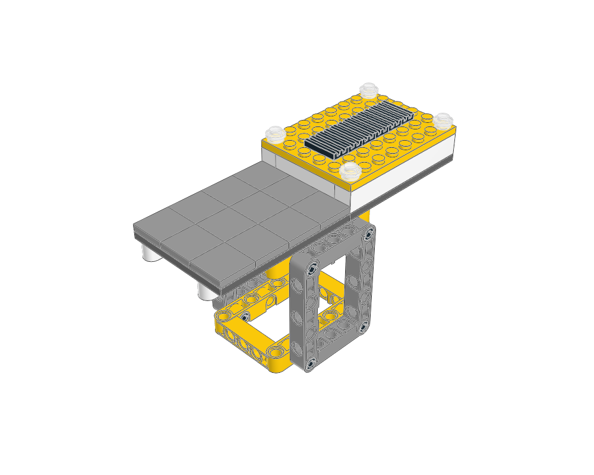
Named-plan version as canonical service-platform starter. Technic box frame, System deck, trim and upper cover match original service-platform geometry; consolidate duplicate catalog entry.
Static visual evidence only unless the linked package records specific further checks. Search eligibility does not certify fit, motion or strength.
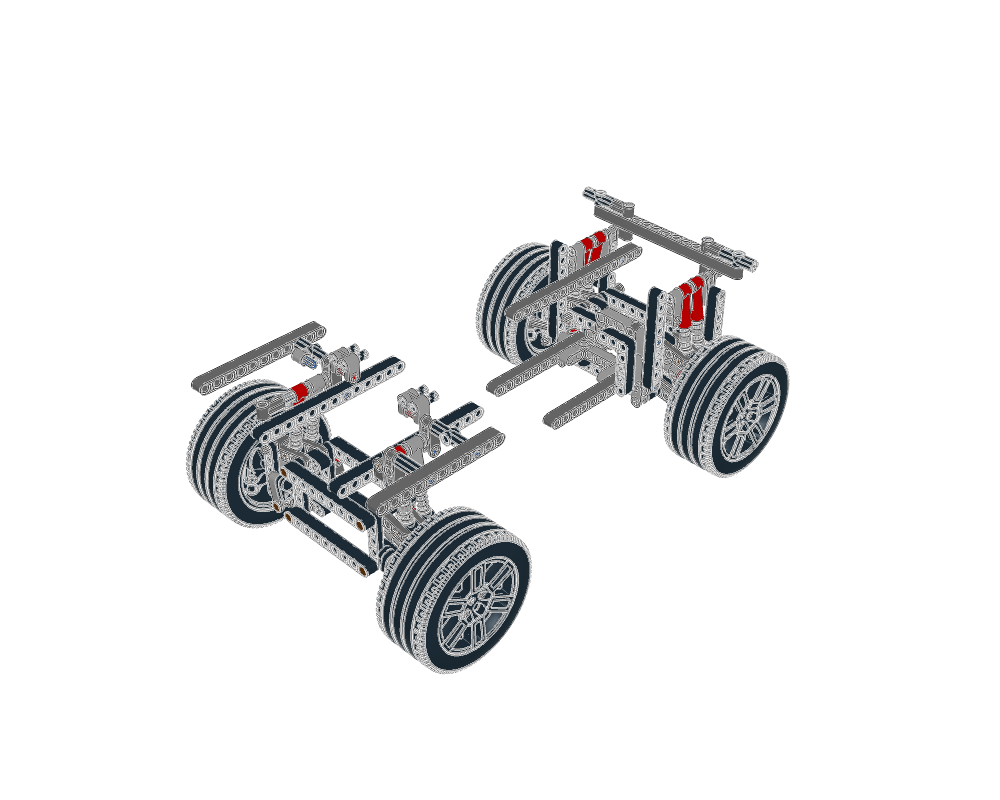
Paired front/rear suspension studies requiring integration. Whole view visibly contains two separated axle assemblies, four wheel corners, wishbones and shocks; it is not a connected chassis. Explicitly state missing central chassis, guide-link holders and Cardan boundary supports in retrieval excerpt.
Static visual evidence only unless the linked package records specific further checks. Search eligibility does not certify fit, motion or strength.
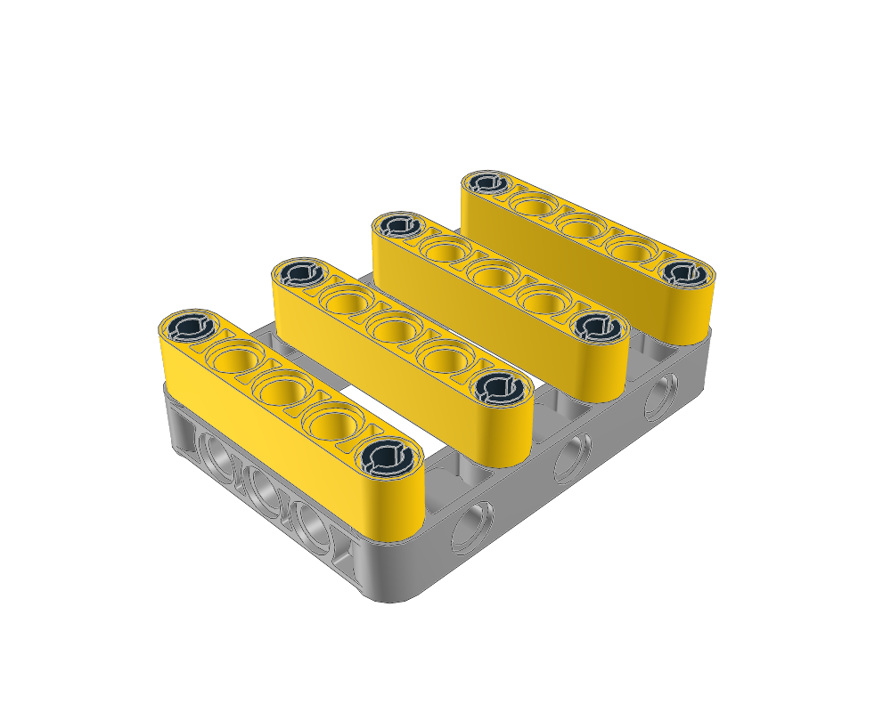
Small pin-and-frame lesson: four yellow crossmembers span moulded frame with two-point attachment. Home and underside agree with description. No load-capacity claim.
Static visual evidence only unless the linked package records specific further checks. Search eligibility does not certify fit, motion or strength.
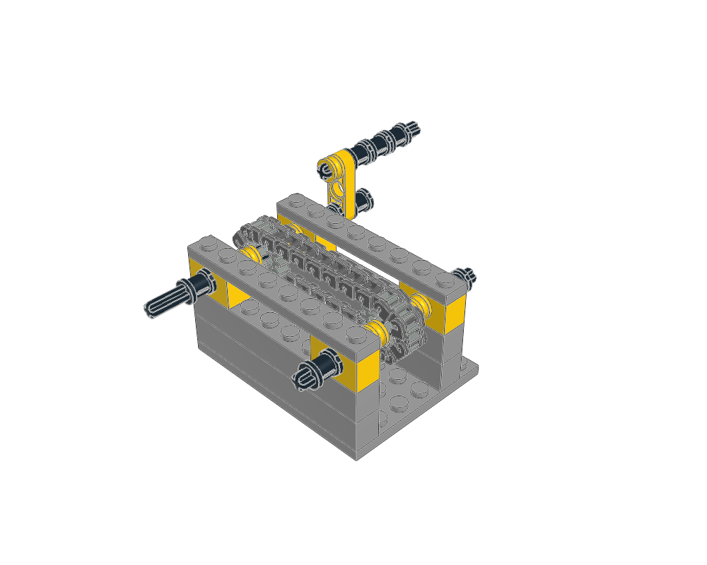
Supported static chain-loop starter: side rails and bearing caps, shaft spacers/stops, hand crank and complete synthesized loop are visible. Preserve wheel spacing and mounting grid. No running tension, wear or cargo-transport test.
Static visual evidence only unless the linked package records specific further checks. Search eligibility does not certify fit, motion or strength.
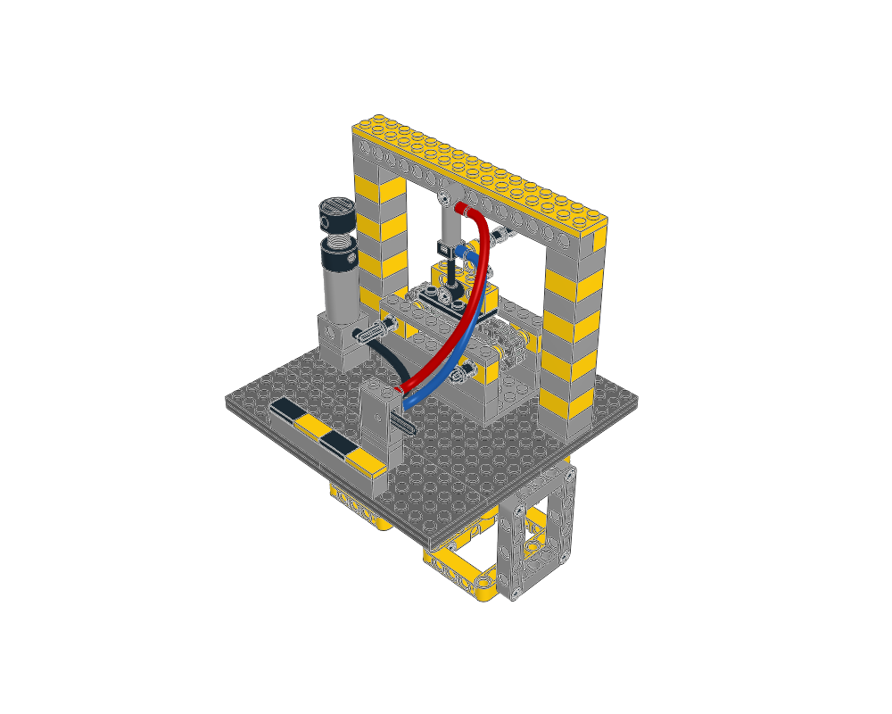
Complete static integration starter. Two box trestles support bonded workbench; retained hand-cranked chain module sits under portal-mounted extended cylinder; separate pump/valve pads and three fitted hoses are visible. All ten children/routes reviewed alone and in parent, including chain inside its bearing frame. Calling it a conveyor describes intent; cargo transport, actuator travel and hose slack across travel remain untested.
Static visual evidence only unless the linked package records specific further checks. Search eligibility does not certify fit, motion or strength.